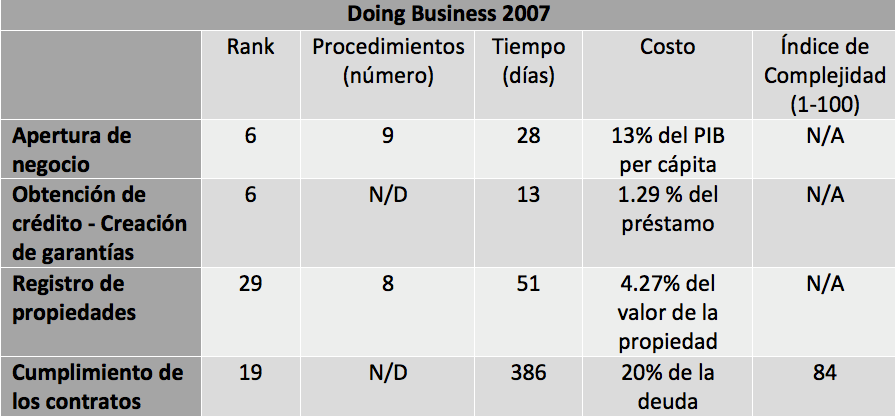
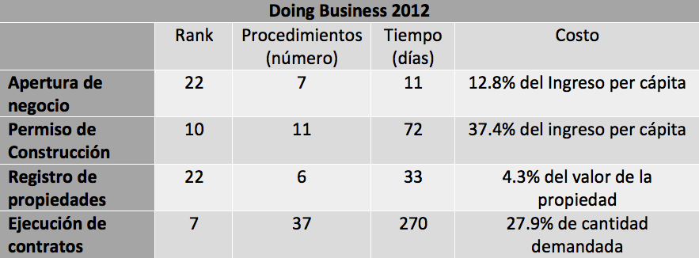
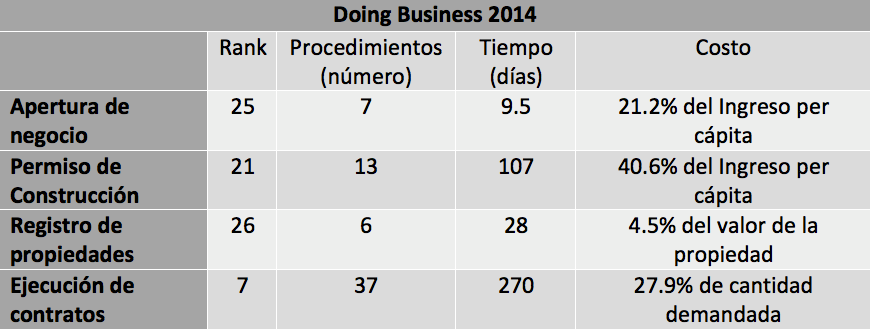
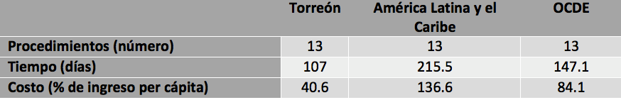

El índice Doing Business en México 2014 fue presentado hoy en la Ciudad de México y publicado en el sitio oficial del proyecto del Banco Mundial, indicándonos en cuál ciudad es más fácil hacer negocios. El ranking evalúa a 32 ciudades de la república, una por cada entidad federativa en las áreas de: apertura de negocio, permiso de construcción, registro de propiedad y cumplimiento de contratos. En cada una de las áreas se califican factores como el número de trámites necesarios y los días y costos en que se incurre. El estudio fue realizado entre octubre de 2011 y Octubre de 2013.
El municipio de Torreón se encuentra dentro de las 32 ciudades calificadas en el índice, lo que nos permite comparar la facilidad de hacer negocios con otras ciudades de la república y del mundo, además de observar la evolución de los indicadores a través del tiempo. Al evaluar una ciudad de cada Estado, se está evaluando entro otros aspectos las leyes de cada uno de los estados y no sólo la normativa municipal. A continuación se presenta un breve resumen de los resultados en los tres último reportes publicados en 2007, 2012 y 2014.
2007
En el ranking subnacional de México en 2007, el municipio de Torreón ocupó el lugar 13 de 32 ciudades evaluadas por Doing Business. Como se observa en la tabla inferior, los mejores resultados de Torreón fueron en apertura de negocio y obtención de crédito, quedando en sexto lugar nacional en ambas categorías.

Nota: En este año la metodología no incluía el área de permiso de construcción, evaluando en su lugar la obtención de crédito.
Fuente: Doing Business en México 2014.
2012
En el índice 2012 Torreón se ubicó en el décimo lugar del índice, es decir subió tres lugares con respecto al 2007. El logro se debió en gran parte a la implementación de la ventanilla electrónica, la cual además de agilizar procesos, no tiene ningún costo.
En la tabla observamos cómo el tiempo para la apertura de negocios, registro de propiedades y ejecución de contratos disminuyó considerablemente.

Nota: En este año la metodología incluye el área de permiso de construcción y elimina el área de obtención de créditos.
Fuente: Doing Business en México 2014.
2014
Este año, Torreón descendió en el índice de facilidad para hacer negocios, ubicándose en el lugar 21. Sin embargo, algunos valores se conservaron respecto al año pasado e incluso otros mejoraron. Al analizar la tabla notamos cómo los indicadores del área de ejecución de contratos permanecieron iguales al 2012, mientras que los días en registro de propiedades y apertura de negocio disminuyeron.
Los indicadores que en realidad afectaron nuestra posición en el índice son los pertenecientes al área de permiso de construcción, así como el aumento en costos en la apertura de negocios y registro de propiedades.

Fuente: Doing Business en México 2014.
A pesar de nuestro lugar en el índice es importante considerar que los estándares nacionales se encuentran muy bien posicionados a nivel internacional, por lo que los valores de nuestros indicadores son competitivos al compararnos con países de América Latina e incluso con los países de la OCDE. Un ejemplo de esto son los resultados internacionales en materia de permiso de construcción, en dónde el mismo número de trámites cuesta aproximadamente 50% menos en nuestra ciudad y en una menor cantidad de tiempo:

Fuente: doingbusiness.org
Aunque estos datos nos ayudan a ubicarnos mejor en contexto el estar mejor que el resto de América Latina no quiere decir que debamos conformarnos, pues al tratar de atraer inversión o generar empleo con quien competimos realmente es con el resto de las ciudades de la república.
Los retos que presentan los indicadores para nuestro municipio abarcan aspectos tales como la mejora normativa municipal, la gestión para mejora regulatoria estatal, eficiencia judicial para el caso de ejecución de contratos e implementación de estrategias para la reducción de tramites con el uso de herramientas tecnológicas. Por ejemplo, en el caso específico de los permisos de construcción algunas medidas recomendadas son la digitalización de la cartografía y el mejorar la comunicación entre las dependencias gubernamentales.
C-Estrategia, consultora responsable del estudio en México anunció la posibilidad de que el estudio comience a realizarse anualmente por lo cual estamos en tiempo de emprender las políticas públicas necesarias.